Every JAZA aquarium in Japan, compared: prices, hours and what each one is for
Japan has more public aquariums per person than almost anywhere, and most "best aquariums in Japan" lists pick seven famous ones and stop. This page does the boring thing instead: it takes every aquarium that belongs to JAZA, the Japanese Association of Zoos and Aquariums — 49 of them — and puts the adult ticket price, hours, closed days, nearest station and the one reason to go into a single sortable table, all read from the official sites. Then it tells you which ones are for adults, which for kids, where the whale sharks and orcas are, and — because this site is run by a biologist — which aquariums actually show you what lives in Japan's rivers and seas.
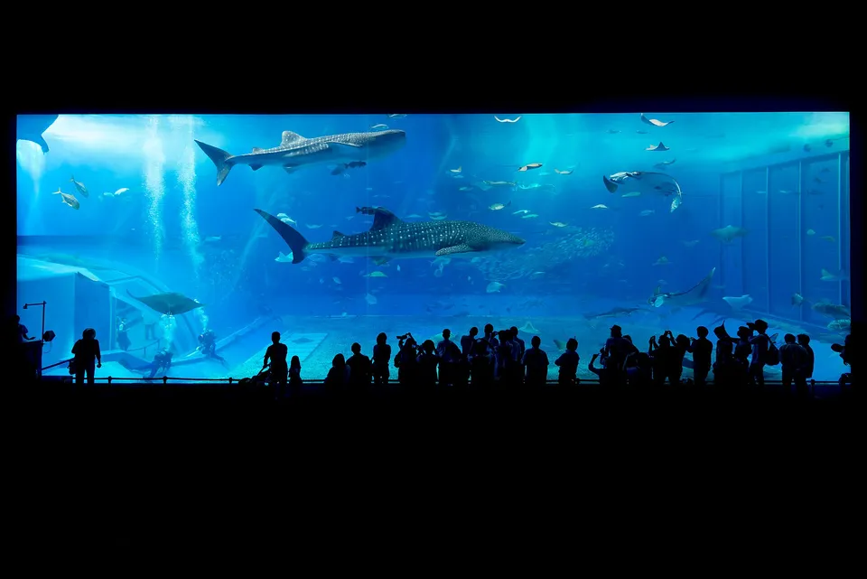
How this list was built (and who is missing)
JAZA is the national association; membership means a facility signs up to its animal-welfare and husbandry standards, and its public member list is the closest thing Japan has to an official register of aquariums. We took the JAZA member search as the master list — 49 aquariums as of August 2026 — and then read each facility's own site for the adult walk-up price, hours, closed days and access. Nothing in the table comes from a third-party listing.
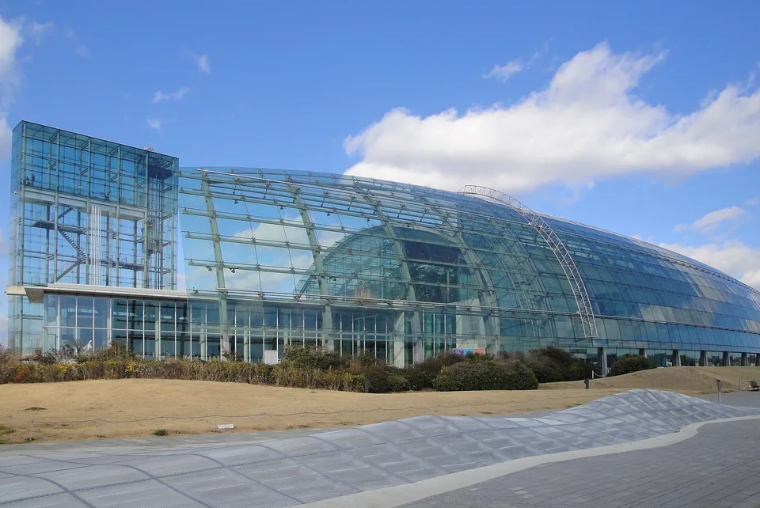
Two consequences of that choice are worth knowing before you plan around the table:
- Some famous aquariums are not JAZA members and so are not in the table. Enoshima Aquarium (Kanagawa), Shimonoseki's Kaikyokan, Aqua World Oarai (Ibaraki), Sendai Umino-Mori, Numazu Deep Sea Aquarium and several others were not on the member list when we checked. That is a fact about membership, not a judgement about the aquariums; several of them are excellent. We say so where relevant below.
- One member is no longer open to the public. Tokai University Marine Science Museum in Shizuoka ended general admission on 31 October 2024 and now works as a research and education facility. It stays in the table with no price so you do not plan a trip around it.
The table: all 49, sortable by price
Click "Adult ticket" to sort by price. The buttons filter by region. Every name links to the official site, which is where the calendar with today's hours and price lives.
| Aquarium | Prefecture | Adult ticket ▾ | Hours · closed | Getting there | Why go |
|---|---|---|---|---|---|
| AOAO SAPPOROAOAO SAPPORO | HokkaidoHokkaido | ¥2,200 | 10:00–22:00 (last entry 21:00)Closed: Irregular maintenance days | 3 min walk from Odori Station (all three subway lines) | Urban night-time aquarium in the Moyuk Sapporo tower; penguins on an upper floor |
| Chitose Aquarium (Salmon Hometown)サケのふるさと 千歳水族館 | HokkaidoHokkaido | ¥800 | 9:00–17:00 (Mar–Nov); 10:00–16:00 (Dec–Feb)Closed: 29 Dec–1 Jan; maintenance mid–late Jan | 15 min walk from JR Chitose Station; 15 min by car from New Chitose Airport | Underwater windows into the actual Chitose River — wild salmon run in autumn |
| Noboribetsu Marine Park Nixe登別マリンパークニクス | HokkaidoHokkaido | ¥3,200 | 9:00–17:00 (last entry 16:30)Closed: Open all year (maintenance closures) | 5 min walk from JR Noboribetsu Station | Danish-castle-style building; daily penguin parade |
| Otaru Aquariumおたる水族館 | HokkaidoHokkaido | ¥1,800 | 9:00–17:00 (to 16:00 mid-Oct–Nov; winter season separate)Closed: Seasonal closures between winter and spring seasons | Bus from JR Otaru Station (Otaru-ekimae terminal, stand 3) | Sea-facing outdoor pools with seals and sea lions right on the coast |
| Shin-Sapporo Sunpiazza Aquarium新さっぽろサンピアザ水族館 | HokkaidoHokkaido | ¥1,200 | 10:00–17:00Closed: Open all year | 3 min walk from JR Shin-Sapporo / 5 min from subway Shin-Sapporo | Small city aquarium inside a shopping complex; easy add-on in Sapporo |
| Aquamarine Fukushimaアクアマリンふくしま | FukushimaTohoku | ¥1,850 | 9:00–17:30 (to 17:00 in winter)Closed: Open all year | Bus from JR Izumi Station to Aeon Mall Iwaki Onahama, then 5 min walk | Triangular tunnel tank where the Kuroshio and Oyashio currents meet; sanma (saury) breeding |
| Inawashiro Kawasemi Aquariumアクアマリンいなわしろカワセミ水族館 | FukushimaTohoku | ¥700 | 9:30–17:00 (to 16:00 in winter)Closed: Open all year | About 10 min by taxi from JR Inawashiro Station | Freshwater life of Lake Inawashiro and its rivers; kingfishers |
| Kamo Aquarium (Tsuruoka)鶴岡市立加茂水族館 | YamagataTohoku | ¥1,500 | 9:00–17:00 (last entry 16:00)Closed: Open all year | Bus from JR Tsuruoka Station (about 40 min) to Kamo Suizokukan | The jellyfish aquarium — dozens of species and a 5 m jellyfish tank |
| Oga Aquarium GAO男鹿水族館GAO | AkitaTohoku | ¥1,300 | 9:00–17:00 (last entry 16:00; varies by season)Closed: Seasonal closure days (see calendar) | Bus from JR Oga Station | Polar bears and the Sea of Japan coast; hata-hata (sailfin sandfish) local exhibit |
| HANA-BIYORI (Yomiuriland)HANA・BIYORI（よみうりランド） | TokyoKanto | ¥800HANA-BIYORI garden entry; ¥2,300 with the hot-spring set | 10:00–20:30Closed: See calendar | Free shuttle from Odakyu Shin-Yurigaoka Station | Aquarium tanks inside a flower greenhouse — the JAZA member is Yomiuriland |
| Kamogawa Sea World鴨川シーワールド | ChibaKanto | ¥3,300 | 9:00–17:00 (varies by season)Closed: Some weekdays in low season (see calendar) | Free shuttle bus about 10 min from JR Awa-Kamogawa Station | Orca performances — one of only three places in Japan with orcas (with Nagoya and Kobe Suma) |
| Kawasaki Aquarium (Kawasui)カワスイ 川崎水族館 | KanagawaKanto | ¥2,200 | 10:00–20:00 (last entry 19:00)Closed: See calendar | Right outside JR Kawasaki Station east exit | River-themed — Tama River to the Amazon; capybaras and a rainforest zone |
| Maxell Aqua Park Shinagawaマクセル アクアパーク品川 | TokyoKanto | ¥2,800 | Varies by season (e.g. 9:00–21:00 in summer)Closed: Open all year | Inside Shinagawa Prince Hotel, 2 min walk from JR Shinagawa Station | Sound-and-light dolphin show; date-night aquarium next to Shinagawa Station |
| Mori no Naka no Suizokukan (Yamanashi Fuji Aquarium)森の中の水族館。山梨県立富士湧水の里水族館 | YamanashiKanto | ¥420 | 9:00–18:00 (to 17:00 in winter)Closed: Tuesdays (see calendar) | 3 min walk from Sakana-Koen bus stop (Fujikyu bus) | Freshwater aquarium fed by Fuji spring water — a two-layer 'double doughnut' tank |
| Saitama Aquariumさいたま水族館 | SaitamaKanto | ¥400¥500 during special exhibitions | 9:30–17:00 (to 16:30 Dec–Jan)Closed: About one Monday a month; none in August | About 15 min by taxi from Tobu Hanyu or Kazo Station | Freshwater only — the fish of Saitama's rivers, in a park with lotus ponds |
| Shinagawa Aquariumしながわ水族館 | TokyoKanto | ¥1,350 | 10:00–17:00 (last entry 16:30)Closed: Tuesdays; 1 Jan | 8 min walk from Keikyu Omori-Kaigan Station | Ward-run aquarium with a tunnel tank and dolphin pool; good value in Tokyo |
| Sumida Aquariumすみだ水族館 | TokyoKanto | ¥2,700 | Varies by day (see calendar)Closed: Open all year | Direct from Oshiage (Skytree-mae) Station, 5 min | Open-air Magellanic penguin pool indoors; Ogasawara-themed tank; jellyfish lab |
| Sunshine Aquariumサンシャイン水族館 | TokyoKanto | ¥2,600–¥3,200Date-based pricing | Varies by day (see calendar); last entry 30 min before closingClosed: A few maintenance days a year (e.g. 12 Nov 2026) | Sunshine City, Ikebukuro | Rooftop 'Sunshine Aqua Ring' where sea lions swim overhead |
| Tochigi Nakagawa Aquarium栃木県なかがわ水遊園 | TochigiKanto | ¥900 | 9:30–16:30Closed: Mondays (open daily in Golden Week and mid-Jul–Aug) | About 40 min by bus from JR Nishi-Nasuno Station | Freshwater aquarium built around the Naka River; big Amazon tunnel tank |
| Tokyo Sea Life Park (Kasai)葛西臨海水族園 | TokyoKanto | ¥700 | 9:30–17:00Closed: Wednesdays | 5 min walk from JR Kasai-Rinkai-Koen Station (Keiyo Line) | Doughnut tank of schooling bluefin tuna; run by the Tokyo Zoological Park Society |
| Yokohama Hakkeijima Sea Paradise横浜・八景島シーパラダイス | KanagawaKanto | ¥3,500Aqua Resorts Pass (four aquarium facilities); rides extra | Varies by seasonClosed: Open all year (facility closures vary) | Seaside Line Hakkeijima Station | Four aquarium buildings on one island, plus rides — a full-day resort |
| Joetsu Aquarium Umigatari上越市立水族博物館 うみがたり | NiigataHokuriku | ¥2,000 | 9:00–18:00 (varies by season)Closed: A few maintenance days (Jan–Feb) | Joetsu city (Naoetsu area) | One of Japan's largest Magellanic penguin colonies; infinity-edge tank facing the Sea of Japan |
| Niigata City Aquarium Marinepia Nihonkai新潟市水族館 マリンピア日本海 | NiigataHokuriku | ¥1,500 | 9:00–17:00 (ticket sales to 16:30)Closed: 29 Dec–1 Jan; first Thu of March and the next day | Bus from Niigata Station to Suizokukan-mae | Sea of Japan marine life; dolphin shows on the coast |
| Notojima Aquariumのとじま水族館 | IshikawaHokuriku | ¥1,890 | 9:00–17:00 (to 16:30 in winter)Closed: 29–31 Dec | Bus from JR Wakura-Onsen Station | Whale shark tank on Noto Island; reopened after the 2024 earthquake |
| Teradomari Aquarium寺泊水族博物館 | NiigataHokuriku | ¥700 | 9:00–16:30 (last entry 16:00)Closed: About one day a month plus 31 Dec–2 Jan | Teradomari fishing-port area, Nagaoka | Small octagonal aquarium on the water beside the Teradomari fish market |
| Hekinan Seaside Aquarium碧南海浜水族館 | AichiChubu | ¥500 | 9:00–17:00 (last entry 16:30)Closed: Mondays (some exceptions) | About 15 min walk from Hekinan Station (Meitetsu) | City aquarium of about 300 species from Japan's coasts; conservation of endangered freshwater fish |
| Port of Nagoya Public Aquarium名古屋港水族館 | AichiChubu | ¥2,030 | 9:30–17:30 (to 20:00 in summer nights)Closed: Mondays in low season (see calendar) | 5 min walk from Nagoyako Station (subway Meiko Line), exit 3 | Japan's largest pool for dolphin performances; orcas and belugas; penguins of Antarctica |
| SEA LIFE Nagoyaシーライフ名古屋 | AichiChubu | ¥1,800From ¥1,800; date-based pricing (LEGOLAND resort) | 11:00–18:30 (varies)Closed: Irregular | 10 min walk from Kinjo-futo Station (Aonami Line) | Compact family aquarium next to LEGOLAND Japan |
| Tokai University Marine Science Museum東海大学海洋科学博物館 | ShizuokaChubu | —General public admission ended 31 Oct 2024 | —Closed: Closed to the general public | Miho, Shizuoka | Still a JAZA member but no longer open to walk-in visitors — do not plan a trip around it |
| átoa (Aquarium × Art)AQUARIUM×ART átoa | HyogoKansai | ¥2,600–¥2,800¥2,800 on peak dates | 10:00–19:00Closed: Open all year (maintenance days) | About 20 min walk from Sannomiya / Motomachi | Aquarium as art installation — spherical tank and projection rooms |
| Himeji City Aquarium姫路市立水族館 | HyogoKansai | ¥600 | 9:00–17:00 (last entry 16:30)Closed: Tuesdays; 29 Dec–1 Jan | Tegarayama Central Park, Himeji | Local Harima-coast species and freshwater fish; a quiet, cheap add-on to Himeji Castle |
| Ise Sea Paradise伊勢シーパラダイス | MieKansai | ¥2,400–¥2,500 | 9:00–17:00 (varies by season)Closed: A few inspection days a year | Bus from Ise-shi Station to Meoto-Iwa Higashiguchi (about 46 min) | Hands-on with sea lions, walruses and otters, next to the Meoto Iwa 'wedded rocks' |
| Kinosaki Marine World城崎マリンワールド | HyogoKansai | ¥2,800 | 9:30–17:00 (varies)Closed: A few days a year (see calendar) | About 10 min by bus from JR Kinosaki-Onsen Station | Sea-cliff aquarium near Kinosaki Onsen; catch-your-own aji fishing |
| Kobe Suma Sea World神戸須磨シーワールド | HyogoKansai | ¥3,100–¥3,700Monthly date-based pricing | 10:00–18:00 (varies)Closed: See calendar | Suma Kaihin Koen area, Kobe | Opened 2024 — orcas in western Japan; dolphin stadium on Suma beach |
| Kyoto Aquarium京都水族館 | KyotoKansai | ¥2,600 | Varies by day (see calendar)Closed: Open all year | 7 min walk from JR Umekoji-Kyotonishi; 15 min from Kyoto Station | Japanese giant salamanders in the 'River of Kyoto' zone; jellyfish and penguins |
| Lake Biwa Museum滋賀県立琵琶湖博物館 | ShigaKansai | ¥840 | 9:30–17:00 (last entry 16:00)Closed: Mondays (open if holiday) | Bus about 25 min from JR Kusatsu Station west exit | A museum whose aquarium wing shows the endemic fish of Lake Biwa — Japan's oldest lake |
| NIFRELニフレル | OsakaKansai | ¥2,400 | Varies by dayClosed: A few maintenance days | Osaka Monorail Bampaku-Kinen-Koen Station (Expocity) | Kaiyukan's 'living museum' — small tanks lit like art, plus a white tiger and free-roaming birds |
| Osaka Aquarium Kaiyukan海遊館 | OsakaKansai | ¥2,800–¥3,200Date-based pricing | Typically 9:30/10:00–20:00 (see calendar)Closed: A few days a year (see calendar) | 5 min walk from Osakako Station (Osaka Metro Chuo Line), exit 1 | Whale sharks in the 9 m-deep Pacific Ocean tank; 'Ring of Fire' route around the Pacific |
| Toba Aquarium鳥羽水族館 | MieKansai | ¥2,800 | 9:30–17:00 (9:00–17:30 in peak periods)Closed: Open all year | About 10 min walk from JR/Kintetsu Toba Station | The only dugong on display in Japan; roughly 1,200 species, no fixed route |
| Miyajima Public Aquarium宮島水族館 | HiroshimaChugoku | ¥1,420 | 9:00–17:00 (last entry 16:00)Closed: Closed 1 Dec 2026 – 31 Mar 2027 for renovation | Walk from Miyajima ferry pier past Itsukushima Shrine | Finless porpoises of the Seto Inland Sea; oyster-farming exhibit |
| Shimane Aquarium AQUASしまね海洋館アクアス | ShimaneChugoku | ¥1,700From ¥1,700 | 9:00–17:00Closed: Tuesdays (next day if holiday) | Bus from JR Hamada Station to Aquas-mae; or walk from JR Hashi Station | Beluga whales blowing bubble rings |
| Tamano Marine Museum (Shibukawa)玉野海洋博物館（渋川マリン水族館） | OkayamaChugoku | ¥800 | 9:00–17:00 (8:30–17:30 in summer)Closed: One weekday a week (none in summer) | Bus from JR Uno Station (about 30 min) | Small Seto Inland Sea aquarium on Shibukawa beach |
| Katsurahama Aquarium桂浜水族館 | KochiShikoku | ¥1,600 | 9:00–17:00 (last entry 16:30)Closed: Open all year | Bus about 30 min from JR Kochi Station to Katsurahama | Beach-side aquarium famous online for its irreverent mascot; pets allowed |
| Osakana-kan (Morinokuni)おさかな館 | EhimeShikoku | ¥1,100 | 10:00–17:00 (varies)Closed: 1 Jan | 3 min walk from JR Matsumaru Station (Yodo Line) | Freshwater fish of the Shimanto River basin, in a roadside station |
| Kagoshima City Aquarium (Io World)いおワールドかごしま水族館 | KagoshimaKyushu | ¥2,000 | 9:30–18:00 (last entry 17:00)Closed: Four days from the first Monday of December | Streetcar to Suizokukan-guchi, then 8 min walk | Whale shark in the Kuroshio tank; sea life of the Nansei islands |
| Marine World Uminonakamichiマリンワールド海の中道 | FukuokaKyushu | ¥2,500 | 9:30–17:30 (to 21:00 in summer)Closed: Four days from the third Monday of January | JR Kashii Line to Uminonakamichi Station | Kyushu's seas — a huge sardine school tank and dolphin/sea-lion show over Hakata Bay |
| Nagasaki Penguin Aquarium長崎ペンギン水族館 | NagasakiKyushu | ¥800 | 9:00–17:00Closed: Open all year (check calendar) | Bus from Nagasaki Station toward Aba / Kasuga-shako-mae | Nine penguin species — one of the most in the world; penguins on a natural beach |
| Oita Marine Palace Aquarium Umitamago大分マリーンパレス水族館 うみたまご | OitaKyushu | ¥3,000 | 9:00–17:00 (to 18:00 in Aug and Golden Week)Closed: Three days in January | Bus from JR Beppu or Oita Station (Takasakiyama-mae) | Touch pools and walrus/dolphin shows; next door to the Takasakiyama monkey park |
| Okinawa Churaumi Aquarium沖縄美ら海水族館 | OkinawaOkinawa | ¥2,180 | 8:30–18:30 (to 20:00/21:00 in peak periods)Closed: No scheduled closures to 31 Mar 2027 | Expressway bus from Naha (about 2 h) to Ocean Expo Park | Whale sharks and mantas in the Kuroshio Sea tank; the aquarium that tops every list |
49 JAZA member aquariums. Adult (high-school-age and up) walk-up price from each official site, checked 2026-08-19; date-based prices shown as a range. Hours are the regular pattern — every one of these changes hours for Golden Week, summer and New Year, so check the calendar linked in the name.
Across the 48 that sell walk-up tickets, the median adult price is ¥1,850. The cheapest are all public or freshwater houses — Saitama Aquarium (¥400), Mori no Naka no Suizokukan (Yamanashi Fuji Aquarium) (¥420), Hekinan Seaside Aquarium (¥500), Himeji City Aquarium (¥600), Inawashiro Kawasemi Aquarium (¥700), Tokyo Sea Life Park (Kasai) (¥700), Teradomari Aquarium (¥700), Chitose Aquarium (Salmon Hometown) (¥800). The most expensive are the resort parks with marine-mammal shows — Kobe Suma Sea World (¥3,100–¥3,700), Yokohama Hakkeijima Sea Paradise (¥3,500), Kamogawa Sea World (¥3,300), Noboribetsu Marine Park Nixe (¥3,200), Sunshine Aquarium (¥2,600–¥3,200).
Which one, for what
The table answers "how much and when". This section answers the question people actually type into a search box.
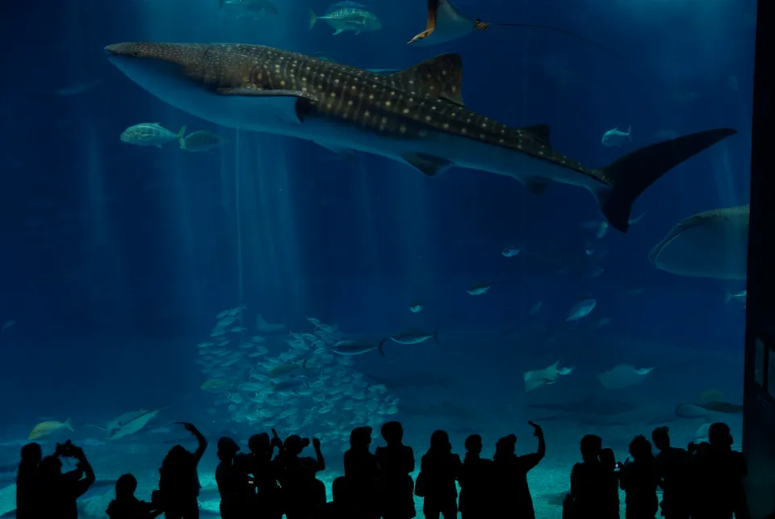
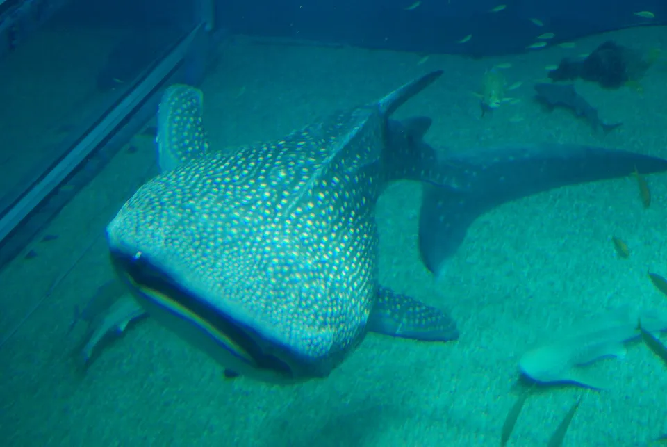
Photos: Whale shark, Okinawa Churaumi Aquarium — pelican from Tokyo, Japan, CC BY-SA 2.0, via Wikimedia Commons · Whale shark in the Pacific tank, Osaka Kaiyukan — Maarten Heerlien from Voorschoten, The Netherlands, CC BY 2.0, via Wikimedia Commons
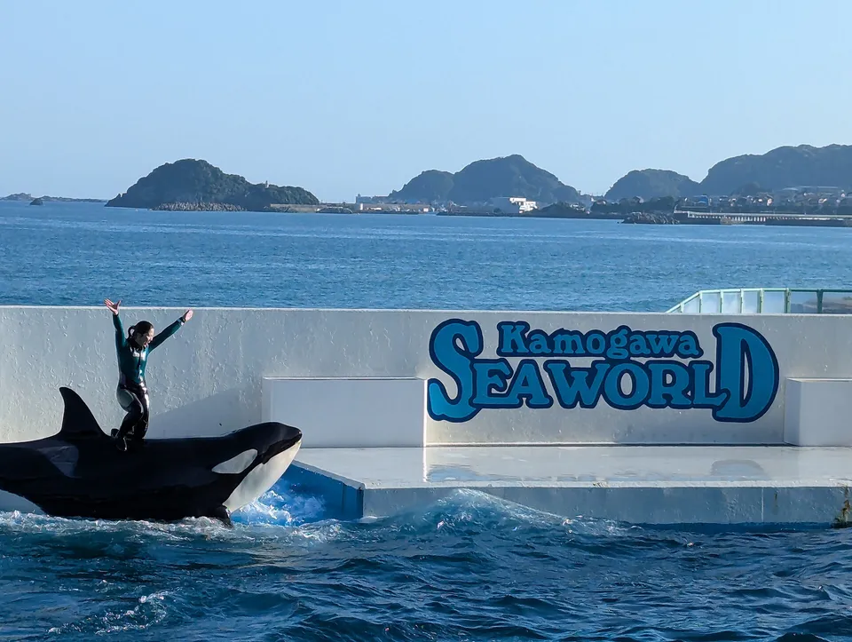
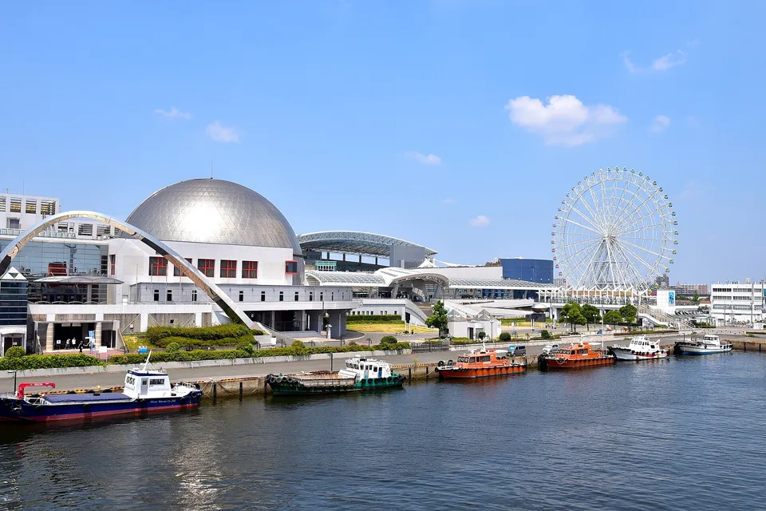
Photos: Orca show, Kamogawa Sea World — Syced, CC0, via Wikimedia Commons · Port of Nagoya Public Aquarium — Bariston, CC BY-SA 4.0, via Wikimedia Commons
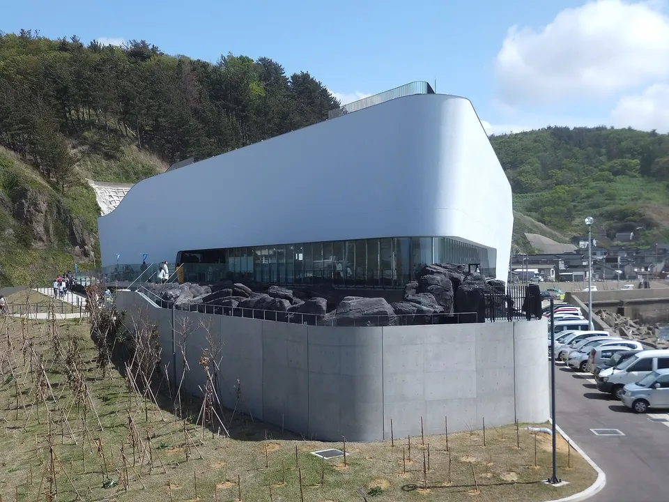
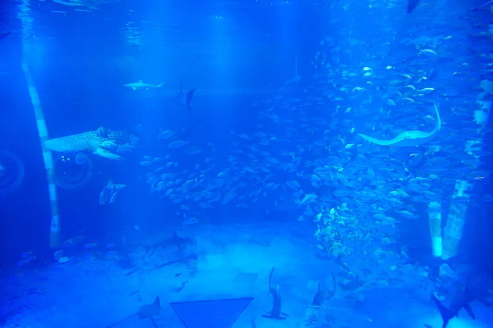
Photos: Kamo Aquarium on the Tsuruoka coast — 掬茶, CC BY-SA 4.0, via Wikimedia Commons · Notojima Aquarium — C1815, CC BY-SA 3.0, via Wikimedia Commons
Best for adults (and for a rainy evening)
AOAO SAPPORO is open until 22:00 in a downtown tower and is built for a drink-and-wander evening; átoa in Kobe is closer to an art installation than a zoo, with a spherical tank and projection rooms; NIFREL next to Osaka's Expocity lights small tanks like gallery pieces; Maxell Aqua Park Shinagawa runs a sound-and-light dolphin show inside a hotel two minutes from Shinagawa Station; Sumida and Kyoto both extend hours in summer for lantern-lit evening entry. None of these are where you go for animal diversity — they are where you go when you want a beautiful hour indoors.
Best for kids
Yokohama Hakkeijima Sea Paradise is four aquarium buildings and a fairground on one island; the ¥3,500 Aqua Resorts Pass covers the aquariums and you add rides on top. Kamogawa Sea World (Chiba) and Kobe Suma Sea World (opened 2024) are the show parks — orcas, dolphins, sea lions on a timetable. Umitamago in Oita and Marine World Uminonakamichi in Fukuoka are the Kyushu equivalents, both with touch pools. If you have small children in Tokyo and no car, Shinagawa Aquarium (¥1,350, ward-run, tunnel tank and dolphins) is the value pick.
Whale sharks
Four JAZA aquariums keep whale sharks: Okinawa Churaumi (the Kuroshio Sea tank, the one in every photo), Osaka Kaiyukan (the 9 m-deep Pacific tank), Notojima on Ishikawa's Noto Peninsula, and Io World in Kagoshima. Churaumi and Kaiyukan are the destinations; Notojima and Kagoshima are the ones you can see without a crowd.
Orcas
Only three places in Japan have orcas: Kamogawa Sea World, the Port of Nagoya Public Aquarium and Kobe Suma Sea World. Whether you want to see orcas in a pool is a fair question to ask yourself; if you do, those are the three.
Jellyfish
Kamo Aquarium in Tsuruoka, Yamagata, is the jellyfish aquarium — it rebuilt itself around them and has a 5 m circular tank of moon jellies that people cross the country for. Kyoto Aquarium's "Kurage Wonder" and Sumida's jellyfish lab are the easy city options.
Cheap and genuinely good
The public and freshwater houses are the bargains: Tokyo Sea Life Park at Kasai (¥700, the bluefin tuna doughnut tank, closed Wednesdays), Saitama Aquarium (¥400), Yamanashi's Mori no Naka no Suizokukan (¥420, fed by Fuji spring water), Himeji City Aquarium (¥600), Chitose (¥800, underwater windows into a real salmon river), Nagasaki Penguin Aquarium (¥800, nine species) and the Lake Biwa Museum (¥840, whose aquarium wing is the only place to see Lake Biwa's endemic fish together).
Tokyo has six — how to choose
Six JAZA aquariums sit inside Tokyo, and they are not interchangeable.
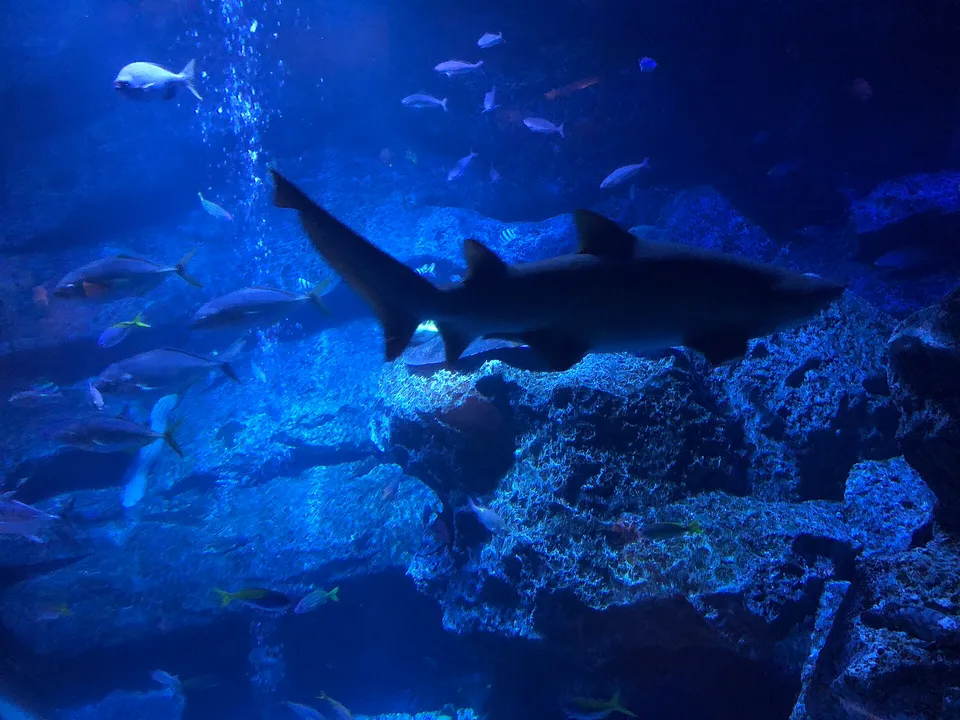
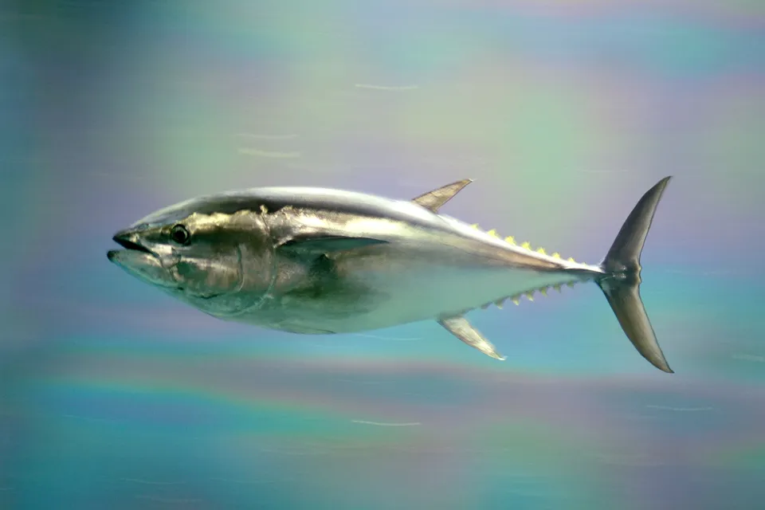
Photos: Sumida Aquarium, Tokyo Skytree Town — Hal 0005, CC BY-SA 4.0, via Wikimedia Commons · Pacific bluefin tuna — the species in Kasai's doughnut tank — aes256, CC BY 2.1 jp, via Wikimedia Commons
| Aquarium | Adult | Pick it when | Skip it when |
|---|---|---|---|
| Sumida (Skytree Town) | ¥2,700 | You are already at Skytree; you want penguins close up and a stylish hour | You want big fish — the tanks are small |
| Sunshine (Ikebukuro) | ¥2,600–3,200 | You want the rooftop "Aqua Ring" of sea lions swimming overhead | You are price-sensitive on a weekend — it is the priciest of the six |
| Maxell Aqua Park (Shinagawa) | ¥2,800 | Evening, date, no plan — it is inside a hotel next to Shinagawa Station and opens late | You dislike shows and lighting effects |
| Tokyo Sea Life Park (Kasai) | ¥700 | You want the most animals per yen in Tokyo, and the tuna tank | It is Wednesday (closed) or you want a polished experience |
| Shinagawa Aquarium (Omori-Kaigan) | ¥1,350 | Kids, budget, a tunnel tank and a dolphin pool without the resort price | It is Tuesday (closed) |
| HANA-BIYORI (Yomiuriland) | ¥800 | You are going to the flower greenhouse anyway; the tanks are a bonus | You want an aquarium — it is a garden with tanks in it |
Kawasaki's Kawasui (¥2,200, right outside JR Kawasaki Station, open to 20:00) is a seventh option a few minutes out of Tokyo, and it is river-themed rather than marine — Tama River to the Amazon, with capybaras.
Osaka, Kyoto, Kobe, Toba
Kaiyukan is the one to build a day around: the route spirals down around a central Pacific tank with whale sharks, and the price is date-based (¥2,800–3,200 in August). NIFREL is Kaiyukan's smaller sister at Expocity, better for a short visit. Kyoto Aquarium is a 15-minute walk from Kyoto Station and its Japanese giant salamander tank is the reason to go — the animals come from Kyoto's own Kamo River system, many of them hybrids, and the exhibit explains the problem of introduced Chinese giant salamanders honestly. In Kobe, Suma Sea World (2024) is the show park and átoa is the art one. Toba Aquarium in Mie is a different animal altogether: about 1,200 species, no fixed route, and the only dugong on display in Japan.
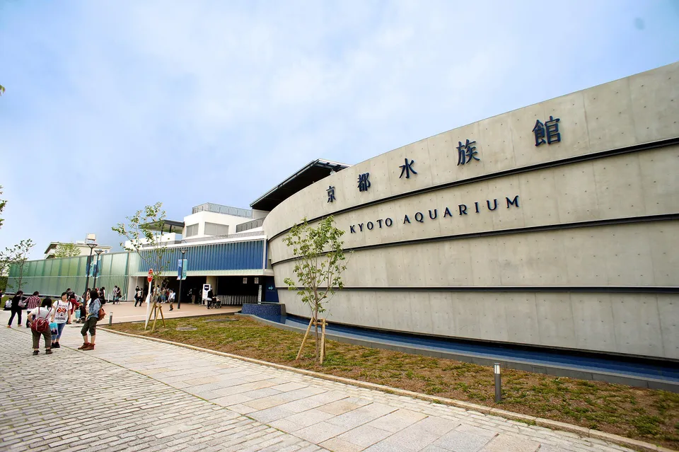
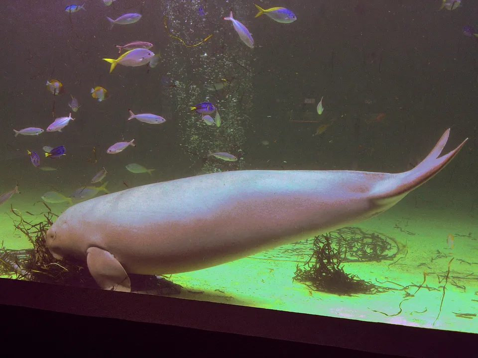
Photos: Kyoto Aquarium — Kirakirameister, CC BY-SA 3.0, via Wikimedia Commons · Serena the dugong, Toba Aquarium — Miyuki Meinaka, CC BY-SA 3.0, via Wikimedia Commons
The aquariums that show Japan's own fish
Most big-city aquariums are built around the Pacific and the tropics — whale sharks, coral, penguins from the southern hemisphere. If what you want is to see what actually lives in Japan's rivers and coasts, the list looks different, and cheaper.
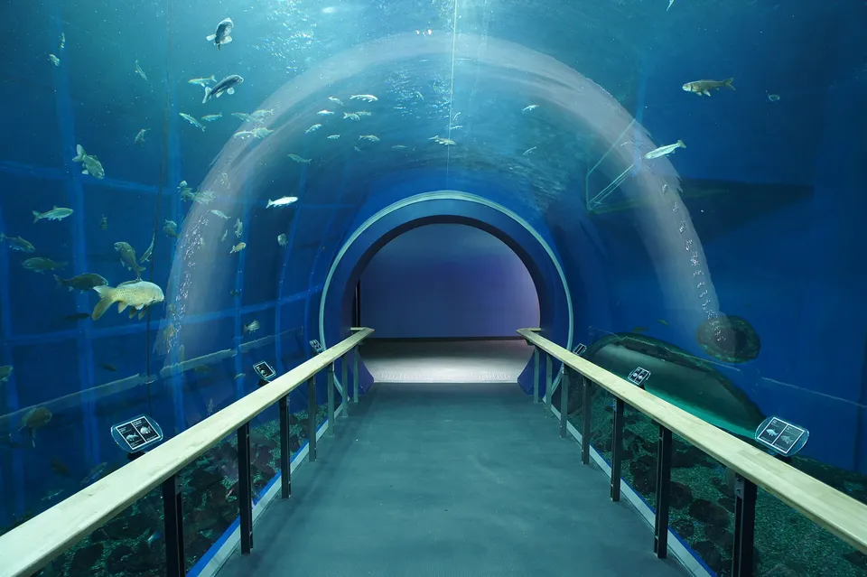
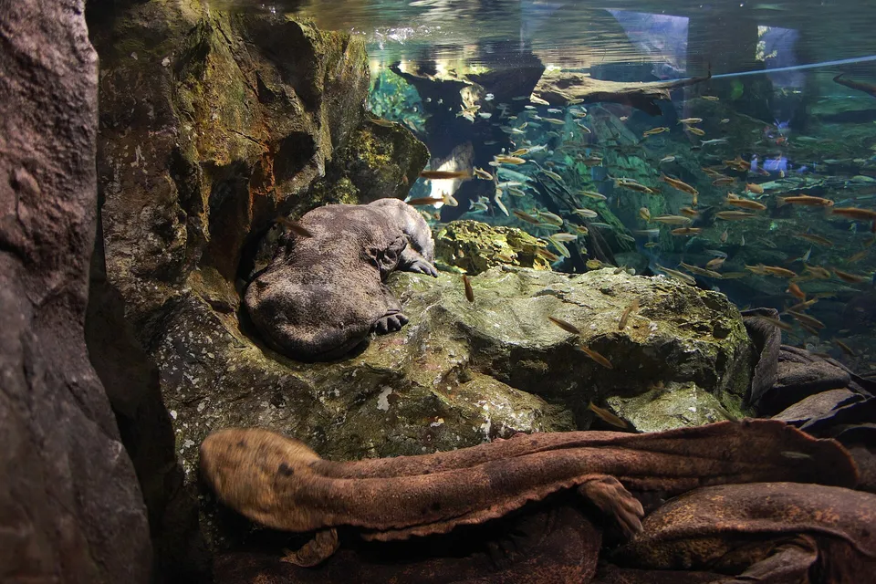
Photos: The tunnel tank at the Lake Biwa Museum — 28n, CC BY-SA 4.0, via Wikimedia Commons · Japanese giant salamanders — V31S70, CC BY 2.0, via Wikimedia Commons
- Lake Biwa Museum (Shiga) — Lake Biwa is Japan's oldest lake and has its own endemic fish (the biwa trout, several gobies and minnows found nowhere else); the museum's aquarium wing is the only place they are shown together.
- Kyoto Aquarium — the giant salamander exhibit above.
- Chitose Aquarium (Hokkaido) — underwater windows into the actual Chitose River; in autumn you watch wild salmon run past the glass.
- Mori no Naka no Suizokukan (Yamanashi) — a freshwater house fed by Fuji spring water, with a two-layer doughnut tank so the big fish circle around the small ones.
- Aquamarine Fukushima — the triangular tunnel where the warm Kuroshio and cold Oyashio currents meet off Fukushima, and one of the few places to see live sanma (Pacific saury), which the aquarium was first to breed.
- Kawasemi Aquarium (Inawashiro), Nakagawa Aquarium (Tochigi), Saitama Aquarium, Hekinan Seaside Aquarium (Aichi) and Osakana-kan (Ehime) — small regional freshwater houses, each showing its own river system.
- Miyajima Public Aquarium — the finless porpoise of the Seto Inland Sea, and how oysters are farmed. Note the closure for renovation from 1 December 2026 to 31 March 2027.
Tickets, dynamic pricing and last entry
- Last entry is usually 30–60 minutes before closing. The table shows opening hours; assume the door shuts earlier.
- Date-based prices (Kaiyukan, Sunshine, Kobe Suma, Ise, SEA LIFE Nagoya) are shown on a calendar on the official site. Weekdays outside school holidays are the cheap end of the range.
- Online tickets exist for most of the big ones and are usually the same price or slightly cheaper; a few (Kaiyukan, LEGOLAND/SEA LIFE) charge a fee for buying at the window.
- Closed days: the public aquariums close one weekday a week (Kasai Wednesday, Shinagawa and Himeji Tuesday, Biwa Museum Monday); the resort ones close only for maintenance. Everything changes hours for Golden Week, mid-August and New Year.
- Combination tickets with the surrounding attraction are common — Nagoya (aquarium + port museum + observation deck), Kagoshima (aquarium + zoo), Churaumi (inside Ocean Expo Park). They are only worth it if you would visit the other place anyway.
The Japanese you'll actually use
| Japanese | Reading | Meaning |
|---|---|---|
| 水族館 | suizokukan | aquarium |
| 入館料 | nyūkan-ryō | admission fee |
| 大人 / 小人 | otona / shōnin | adult / child (on price boards) |
| 最終入館 | saishū nyūkan | last entry |
| 休館日 | kyūkan-bi | closed day |
| 年中無休 | nenjū mukyū | open all year |
| 年間パスポート | nenkan pasupōto | annual pass |
| ジンベエザメ | jinbeezame | whale shark |
| シャチ / イルカ | shachi / iruka | orca / dolphin |
| クラゲ | kurage | jellyfish |
| オオサンショウウオ | ōsanshōuo | Japanese giant salamander |
| 触ってもいいですか | sawatte mo ii desu ka | May I touch it? (touch pools) |
Common questions
Q. What is the best aquarium in Japan?
A. For sheer scale, Okinawa Churaumi and Osaka Kaiyukan — both keep whale sharks in tanks big enough to look natural. For a single-theme aquarium that people travel for, Kamo Aquarium's jellyfish. For seeing Japan's own species, the Lake Biwa Museum and Kyoto Aquarium's giant salamanders.
Q. How much does an aquarium cost in Japan?
A. Across the 48 JAZA aquariums that sell walk-up tickets, adult prices run from ¥400 (Saitama) to ¥3,700 (Kobe Suma on peak dates); the median is around ¥1,850. Public and freshwater aquariums are ¥400–900, city aquariums ¥1,300–2,700, resort parks with marine-mammal shows ¥3,000 and up.
Q. Which aquariums in Japan have whale sharks?
A. Okinawa Churaumi, Osaka Kaiyukan, Notojima (Ishikawa) and Kagoshima's Io World.
Q. Which aquariums in Japan have orcas?
A. Kamogawa Sea World (Chiba), the Port of Nagoya Public Aquarium and Kobe Suma Sea World.
Q. Are there aquariums in Tokyo?
A. Six JAZA members: Sumida (Skytree), Sunshine (Ikebukuro), Maxell Aqua Park (Shinagawa), Tokyo Sea Life Park (Kasai), Shinagawa Aquarium (Omori-Kaigan) and the tanks inside HANA-BIYORI at Yomiuriland — plus Kawasui in Kawasaki just outside. Sumida and Sunshine for atmosphere, Kasai for value and the tuna tank.
Q. Why isn't Enoshima Aquarium (or Kaikyokan, Oarai, Sendai) in the table?
A. Because they were not JAZA members when we built the list, and the list is defined by membership so that every entry is checked the same way. They are real, and some are very good.
Q. Do prices change by date?
A. At some, yes — Kaiyukan, Sunshine, Kobe Suma, Ise and SEA LIFE Nagoya use calendars where weekends and school holidays cost more. The table shows those as a range.
We're a Japanese family of three traveling all 47 prefectures with our kid, and this guide comes from that road. Our free newsletter 47 Notes from Japan shares the travel notes, collectibles and small discoveries we don't put on the blog.